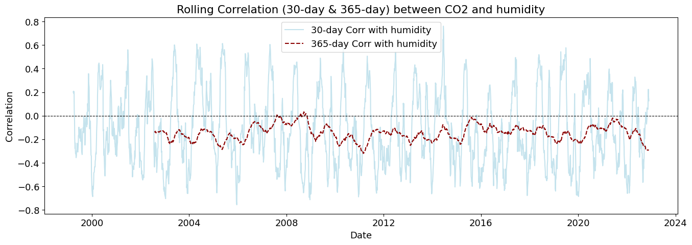
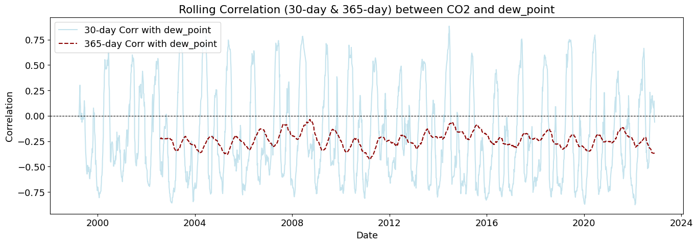
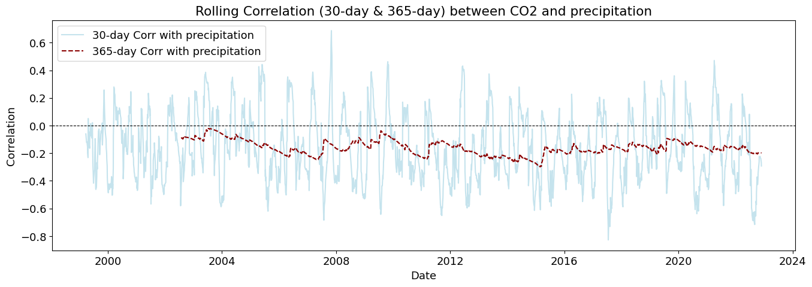
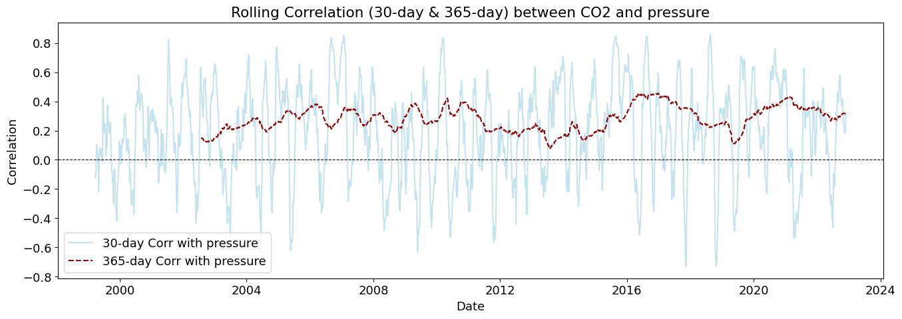
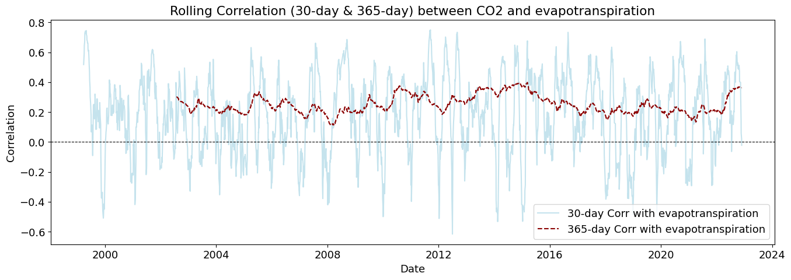
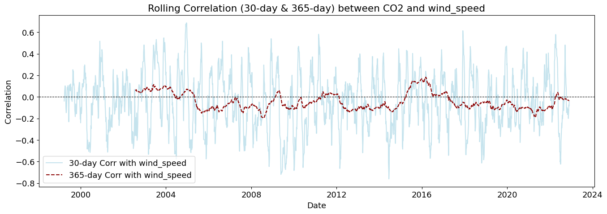
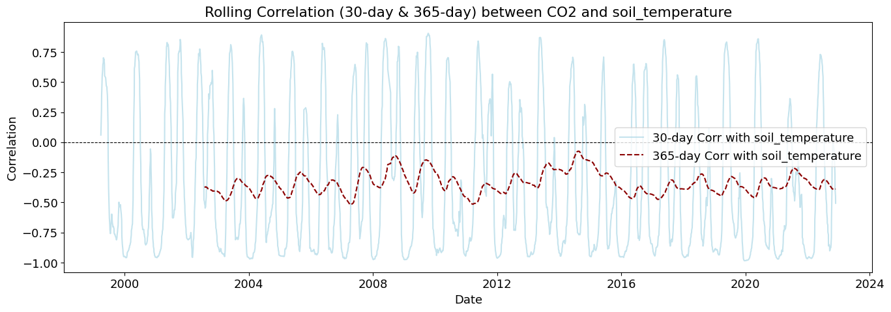
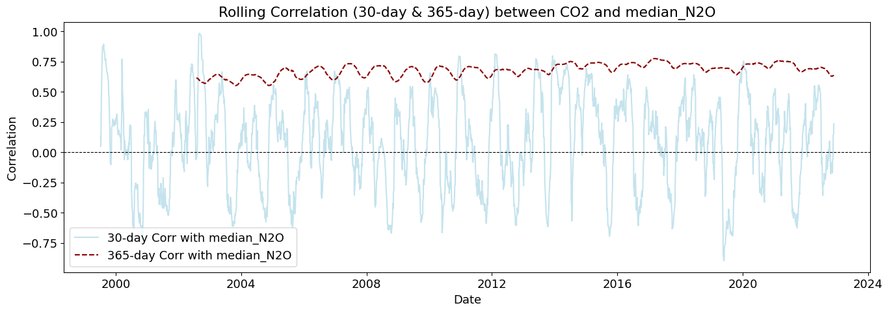
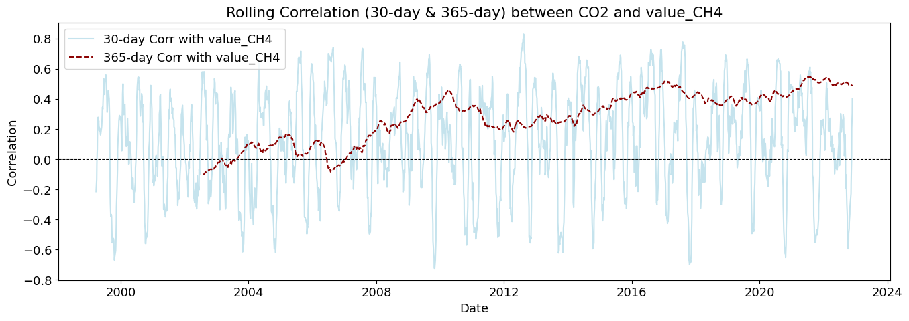
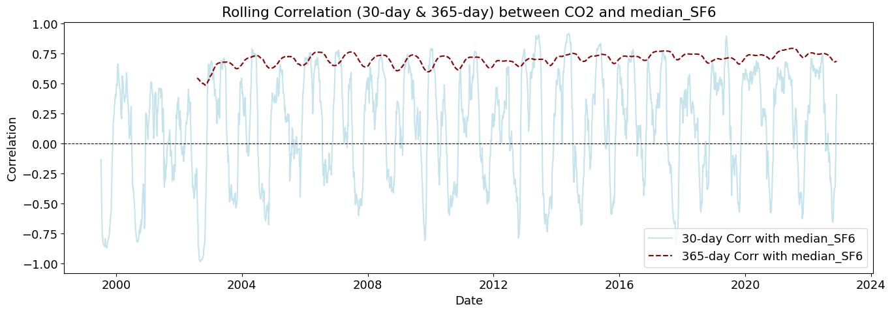

The quantity of CO2 is determined and described by the chemical term “mole fraction”, defined as the number of carbon dioxide molecules in a given number of molecules of air, after removal of water vapor. For example, 413 parts per million of CO2 (abbreviated as ppm) means that in every million molecules of (dry) air there are on average 413 CO2 molecules.
1Data Preprocessing
2 Importing libraries
Code
import pandas as pdimport numpy as npimport matplotlib.pyplot as pltimport seaborn as snsfrom scipy.stats import kendalltaufrom helpers import (coerce_into_full_datetime, add_missing_one_year_rows, plot_column, add_missing_dates, plot_rolling_correlations, interpret_p_value, plot_lagged_correlations, plot_entire_df)from statsmodels.tsa.stattools import adfuller, grangercausalitytestsimport warningswarnings.filterwarnings('ignore')
3 Importation, checks and formatting of station data
invalid_average = (df_station['average'] ==-999.99).sum()invalid_1year = (df_station['1 year ago'] ==-999.99).sum()invalid_10years = (df_station['10 years ago'] ==-999.99).sum()print(invalid_average)print(invalid_1year)print(invalid_10years)
18
70
540
We are using the data from the ‘1 year ago’ and ‘10 years ago’ columns to include and adjust missing datetimes, thus giving us a richer dataframe which would allow us to capture the trend effectively.
Code
df_station = add_missing_dates(df_station) # using the function to create new rows using the '10 year ago' columndf_station = add_missing_one_year_rows(df_station) # using the function to create new rows using the '1 year ago' columndf_station.drop(df_station[df_station['average'] ==-999.99].index, inplace=True)
Code
df_station
average
ndays
1 year ago
10 years ago
increase since 1800
1974-05-19
333.37
5.0
-999.99
NaN
50.40
1974-05-25
332.95
NaN
NaN
NaN
NaN
1974-05-26
332.95
6.0
-999.99
NaN
50.06
1974-06-01
332.44
NaN
NaN
NaN
NaN
1974-06-02
332.35
5.0
-999.99
NaN
49.60
...
...
...
...
...
...
2024-09-15
421.98
7.0
418.33
395.24
145.49
2024-09-22
421.71
2.0
418.28
395.47
145.32
2024-09-29
421.95
4.0
418.35
395.61
145.56
2024-10-06
422.16
4.0
418.47
395.73
145.68
2024-10-13
422.62
5.0
419.56
395.86
145.97
5174 rows × 5 columns
4 Importation, preprocessing and evaluation of feature importance from Open Meteo weather data
# Creating df on dates when station data and Open Meteo data overlapcommon_dates = df_history.index.intersection(df_station.index)df_history = df_history.loc[common_dates]
Surprisingly and unfortunately, there seems to be little to no correlation between the weather data and the average levels of CO2 at this particular location.
However further testing and assessment is needed before drawing final conclusions.
dfs = [df.copy() for df in [df_CO2_meteo, df_N2O, df_CH4, df_SF6]]for i inrange(len(dfs)): dfs[i].index = pd.to_datetime(dfs[i].index) # Converting index to proper datetime64[ns]start_date = df_CO2_meteo.index.min() # Get the earliest date from df_CO2_meteodfs = [df[df.index >= start_date] for df in dfs]df_combined_outer = pd.concat( [dfs[0][['temperature', 'humidity', 'dew_point', 'precipitation', 'pressure','evapotranspiration', 'wind_speed', 'soil_temperature', 'average_CO2']], dfs[1][["median_N2O"]], dfs[2][["value_CH4"]], dfs[3][["median_SF6"]]], axis=1, join="outer")
Code
dfs = [df.copy() for df in [df_CO2_meteo, df_N2O, df_CH4, df_SF6]]for i inrange(len(dfs)): dfs[i].index = pd.to_datetime(dfs[i].index) # Converting index to proper datetime64[ns]start_date = df_CO2_meteo.index.min() # Get the earliest date from df_CO2_meteodfs = [df[df.index >= start_date] for df in dfs]df_combined_inner = pd.concat( [dfs[0][['temperature', 'humidity', 'dew_point', 'precipitation', 'pressure','evapotranspiration', 'wind_speed', 'soil_temperature', 'average_CO2']], dfs[1][["median_N2O"]], dfs[2][["value_CH4"]], dfs[3][["median_SF6"]]], axis=1, join="inner")
Pearson’s correlation measures the linear relationship between variables.
The correlation coefficient ranges from -1 to +1, where -1 indicates a perfect negative linear relationship, +1 indicates a perfect positive linear relationship, and 0 indicates no linear relationship.
However, it has a limitation: it only captures linear relationships and can miss other types of relationships between variables.
Kendall’s Tau takes a different approach. Instead of measuring linear relationships, it looks at the concordance between variables - essentially, whether they tend to move in the same direction. It’s measuring the tendency of the variables to increase or decrease together, without assuming anything about the shape of that relationship.
In the context of environmental data like CO2 levels, temperature, and other climate variables, Kendall’s Tau might be particularly useful because environmental relationships aren’t always linear, and the data often contains outliers or follows non-normal distributions.
Code
plot_rolling_correlations(df_combined_inner)










Rolling correlations (also called moving correlations) are a dynamic way to measure how the relationship between two variables changes over time. Unlike a single correlation coefficient that shows one number for an entire dataset, rolling correlations show how the correlation evolves throughout a time series.
Rolling correlations can be used in environmental studies to understand how relationships between variables shift with seasonal or long-term changes.
Code
# Checking for stationarity (Augmented Dickey-Fuller Test)def check_stationarity(series, variable_name): result = adfuller(series.dropna()) p_value = result[1]return p_valuestationarity_results = {col: check_stationarity(df_combined_inner[col], col) for col in df_combined_inner.columns}max_lag =12granger_results = {}# Performing Granger Causality testsfor col in df_combined_inner.columns:if col !="average_CO2": test_result = grangercausalitytests(df_combined_inner[['average_CO2', col]].dropna(), max_lag, verbose=False) granger_results[col] = {lag: test_result[lag][0]['ssr_ftest'][1] for lag inrange(1, max_lag +1)}stationarity_results
The ADF test checks whether a time series data is stationary, which is crucial for many statistical analyses. A stationary time series has consistent statistical properties over time - its mean and variance don’t change.
Granger Causality tests explore whether past values of one variable help predict future values of another. It’s testing the “statistical causality” - though it’s important to note that Granger causality doesn’t necessarily mean actual causation.
Code
# Converting Granger causality test results into a readable dataFramegranger_df = pd.DataFrame.from_dict( {var: [granger_results[var][lag] for lag inrange(1, max_lag +1)] for var in granger_results.keys()}, orient='index', columns=[f'Lag {i}'for i inrange(1, max_lag +1)])granger_df["Interpretation"] = granger_df.apply(lambda row: interpret_p_value(row.values), axis=1)granger_df
Lag 1
Lag 2
Lag 3
Lag 4
Lag 5
Lag 6
Lag 7
Lag 8
Lag 9
Lag 10
Lag 11
Lag 12
Interpretation
temperature
7.720947e-25
5.497089e-21
7.705556e-26
9.829507e-24
7.675065e-19
3.120083e-17
8.219184e-13
2.203910e-12
5.638884e-10
4.525774e-09
1.018310e-07
2.367689e-07
Strong causality (p < 0.01)
humidity
8.903531e-12
1.981891e-10
8.968556e-14
2.988373e-14
3.172161e-11
6.171779e-10
6.195866e-07
1.348078e-06
5.218207e-04
2.136951e-03
4.108305e-03
6.423288e-03
Strong causality (p < 0.01)
dew_point
8.067610e-25
4.458532e-21
8.264431e-26
3.584386e-24
1.393978e-19
4.411318e-18
1.616901e-13
7.524441e-13
4.799498e-09
3.827182e-08
1.586932e-07
3.114832e-07
Strong causality (p < 0.01)
precipitation
3.819164e-04
5.001872e-03
5.371408e-04
1.094697e-04
8.476688e-03
2.857322e-02
3.756680e-01
5.216954e-01
9.136631e-01
8.859372e-01
3.525676e-01
1.535244e-01
Moderate to low causality (p < 0.05 at some lags)
pressure
4.438619e-11
7.971067e-09
1.926409e-10
6.537783e-09
1.693316e-06
1.212028e-05
1.613346e-03
3.624291e-03
2.254627e-02
3.287454e-02
9.963901e-03
7.508465e-03
Moderate to low causality (p < 0.05 at some lags)
evapotranspiration
2.125455e-04
1.541215e-05
3.031203e-07
2.011486e-06
3.167283e-08
8.742475e-10
4.830566e-09
1.208496e-08
1.646039e-08
2.601857e-09
6.520648e-12
1.285255e-12
Strong causality (p < 0.01)
wind_speed
1.440207e-12
4.899939e-12
5.808182e-14
3.671966e-15
1.207507e-13
1.313350e-12
3.845556e-10
5.768298e-10
1.274597e-08
2.401023e-08
1.356298e-07
6.914299e-08
Strong causality (p < 0.01)
soil_temperature
4.069728e-32
1.903884e-26
1.176250e-39
1.926643e-37
1.831168e-32
1.178714e-30
7.919387e-24
3.344132e-23
6.174720e-22
7.789451e-21
5.191957e-22
2.197068e-21
Strong causality (p < 0.01)
median_N2O
8.008445e-05
4.118513e-05
8.078303e-04
6.303455e-04
1.439309e-04
3.025065e-06
1.612906e-08
1.365409e-08
6.937741e-13
4.135353e-14
9.966893e-18
1.458885e-18
Strong causality (p < 0.01)
value_CH4
6.094348e-06
1.821082e-13
1.783052e-19
2.951395e-22
2.037874e-23
3.249063e-25
1.223335e-22
4.499614e-22
6.773017e-15
8.673936e-14
5.394487e-13
1.508888e-12
Strong causality (p < 0.01)
median_SF6
8.433207e-04
2.402066e-07
7.523613e-06
7.130874e-08
2.532144e-11
1.648528e-12
6.471290e-15
7.232538e-15
5.658483e-17
3.503844e-18
1.710563e-20
1.563221e-22
Strong causality (p < 0.01)
Results 1. Stationarity Check (Augmented Dickey-Fuller Test) CO₂ (average_C2O) is non-stationary → This means CO₂ has a trend and may need differencing to make it stationary before modeling. Although the meteorological data is mostly stationary, the gas related datasets (N₂O, CH₄, and SF₆) are non-stationary.
Granger Causality (p-values across 1-12 lags) Lower p-values (< 0.05) indicate strong causality. The smaller the p-value, the more significant the predictive relationship.
Temperature (temperature_2m (°C)) ✅ Strong causality across all lags - Predicts future CO₂ trends
Relative Humidity (relative_humidity_2m (%)) ✅ Significant up to lag 12 - Influences CO₂ levels, but weaker than temperature
N₂O (median_N2O) ✅ Significant causality at longer lags - Has a delayed effect on CO₂
SF₆ (median_SF6) ✅ Moderate causality at higher lags - SF₆ shows long-term predictive power
Temperature and CH₄ have a very strong causal effect and are the strongest predictor of CO₂
The p-values are extremely low, suggesting that past temperature values contain significant information about future CO₂ levels.
This makes sense since methane (CH₄) and CO₂ are both greenhouse gases affected by similar processes.
Humidity, N₂O, and SF₆ also predict CO₂, but to a lesser extent.
Why Did Pearson & Kendall Show Weak Correlation, But Granger Shows Strong Causality? The difference comes from how these methods analyze relationships.
Pearson/Kendall Correlation (Static, Instantaneous Relationship) These methods only measure direct relationships between variables at the same time. Pearson Correlation checks linear relationships at one point in time. Kendall Correlation looks at rank-based (monotonic) relationships but still without considering time delays. Since CO₂, temperature, and humidity might have delayed effects on each other, Pearson/Kendall may fail to detect a strong relationship.
Granger Causality (Temporal Dependency) This test considers past values of temperature, humidity, and other variables to see if they help predict future CO₂. Many climate and atmospheric processes do not act immediately—they take weeks or months to show an impact. Example: Higher temperatures today might increase plant respiration or ocean CO₂ release over the next few weeks or months. That’s why even if Pearson/Kendall showed weak relationships, Granger Causality detects delayed effects that standard correlation ignores.
Real-World Example of Delayed Causality in Climate Data
Temperature & CO₂: When temperatures rise, it may take weeks to months before we see a significant change in CO₂ levels due to ocean-atmosphere exchange. Humidity & CO₂: Humidity affects cloud cover, precipitation, and soil moisture, which influence carbon absorption and release but not immediately. Methane (CH₄) & CO₂: CH₄ breaks down into CO₂ over time, meaning its effects on CO₂ might appear after several months.
Key Observations: 🌡 Temperature (temperature_2m (°C)) shows a periodic pattern - The correlation peaks at around 90, 180, and 360 days. - This suggests a seasonal effect, where temperature changes predict CO₂ levels months later. - Possible explanation: Seasonal cycles of vegetation, ocean uptake, or industrial activity.
💧 Humidity (relative_humidity_2m (%)) has a weak but noticeable lag effect - Correlation is slightly negative, meaning higher humidity may be linked to lower CO₂ later. - This could be due to increased plant growth (photosynthesis) reducing CO₂.
🛑 N₂O (median_N2O) shows some delayed correlation
N₂O is related to industrial activity and fossil fuel combustion.
If N₂O increases, CO₂ might follow due to shared emission sources.
*🔥 Methane (value_CH4) has a strong positive correlation with CO₂ over time
CH₄ and CO₂ both contribute to greenhouse effects.
CH₄ breaks down into CO₂ over time, explaining why higher CH₄ leads to increased CO₂ later.
🌎 SF₆ (median_SF6) shows the strongest overall correlation
SF₆ is a long-lived greenhouse gas, and its correlation with CO₂ is almost constant. This suggests shared sources or long-term emission trends.
🔬 Interpretation - Temperature and CH₄ are the strongest predictors of CO₂ over time. - The delayed effects (~90 to 360 days) explain why Pearson/Kendall correlation missed these relationships. - There is a clear seasonal component, especially for temperature and humidity. - Industrial gases (N₂O, SF₆) show long-term trends in relation to CO₂.
📉 Temperature (temperature_2m (°C)) shows Strong Multi-Year Cycles - Clear periodic pattern every ~365 days → Suggests annual climate cycles affecting CO₂. - Peaks every ~1 year, aligning with seasonal and yearly CO₂ fluctuations.
💧 Humidity (relative_humidity_2m (%)) Shows Opposite Cycles - Correlation oscillates inversely to temperature. - Suggests that higher humidity is associated with lower future CO₂ levels, likely linked to vegetation absorption and precipitation cycles.
🔥 CH₄ (value_CH4) and SF₆ (median_SF6) Show Strong Long-Term Correlations - they maintain high correlation for multiple years.
📈 N₂O (median_N2O) Shows Long-Term Influence - it maintains a high correlation for several years.
The yearly cycles suggest that seasonality must be considered in CO₂ forecasting models.
🔍 Very Long-Term Lagged Correlation Analysis (10 Years)
This plot extends the lagged correlation window to 10 years (3650 days) to examine even longer-term dependencies between CO₂ and its predictors.
🌡 Temperature (temperature_2m (°C)) Shows a Strong Multi-Year Cycle
Clear oscillations approximately every year (365 days) - suggests strong seasonal and multi-year trends in CO₂.
💧 Humidity (relative_humidity_2m (%)) - shows an inverse correlation to temperature. - Indicates that higher humidity leads to lower CO₂ after several months/years (likely due to enhanced vegetation growth, precipitation, and CO₂ absorption).
🔥 N₂O (median_N2O) and SF₆ (median_SF6) Maintain Strong Long-Term Correlations
They consistently correlate with CO₂ across multiple years - suggests shared emission sources or slow accumulation effects over time.
📈 CH₄ (value_CH4) Shows a Gradual Decrease in Correlation Over Time
The influence on CO₂ appears strongest in the first few years but then declines.
📉 After ~8-10 Years, Correlations Become More Unstable
Around 2500-3500 days (7-10 years), the correlations become noisier. This could be due to external climate variability, policy changes, or model limitations in capturing such long-term effects.
🌍 Implications for Long-Term CO₂ Forecasting - Annual cycles are clearly visible, meaning that any CO₂ forecasting model should incorporate seasonality. - Humidity has a delayed inverse effect, possibly due to its influence on carbon sinks. - Industrial pollutants show shorter-term influence, making them more useful for mid-term (1-5 year) forecasting.